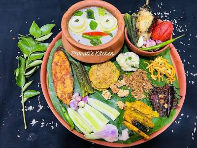

Dadhianna — Offered to Lord Jagannath since the 11th century
Pakhala
ପଖାଳ ଭାତ
"ଦଧ୍ୟୋଦନଂ ଶ୍ରୀ ଜଗନ୍ନାଥ ଭୋଗ ଉତ୍ତମ ଶୀତଳ"
"Curd-rice is the supreme cooling offering of Lord Jagannath."
— From Skanda Purana references to Chhappan Bhog
Pakhala is cooked rice soaked and lightly fermented in water — the food of farmers, the offering of gods. It has been prepared at the Puri temple since the 11th century and celebrated worldwide every 20th March as Pakhala Dibasa. This is the Dahi Pakhala (curd) variety with a chhunka (tempered) finish.
Ingredients
- 1 cup parboiled rice (usuna chaula)
- 6–7 cups water
- 3–4 tbsp sour curd (dahi)
- 1-inch ginger, finely grated
- 2–3 green chillies, slit
- 8–10 curry leaves
- 1 tsp mustard seeds
- 1 dry red chilli
- 1 tsp mustard oil
- Handful fresh coriander leaves
- Salt to taste (add only after fermenting)
- Lemon wedge, for serving
Serve with: fried potato (alu bharta), badi chura, papad, or fried fish.
Instructions
Cook the parboiled rice in an open vessel with plenty of water until slightly softer than table rice — you want it a little overcooked. Strain, retaining a little of the starchy cooking water (peja).
Let the cooked rice cool completely to room temperature. This is important — warm rice in water ferments into the wrong flavour.
Transfer rice to a clay pot or glass/ceramic bowl. Add enough water to submerge the rice by 1–2 cm. Add the peja (starchy water) and the sour curd. Stir gently. Cover with a muslin cloth. Leave to ferment overnight — 10 to 12 hours.
After fermentation, the water turns slightly cloudy and the rice gives off a mild sweet-sour smell. Small bubbles may appear. This is correct and good.
Now add salt. Taste first — add gradually. Add grated ginger and green chillies. Stir well.
For the chhunka: heat mustard oil in a small pan. When it just begins to smoke, add mustard seeds. Let them pop. Add one dry red chilli and curry leaves. Fry for 20 seconds. Pour this tempering over the Pakhala.
Garnish with fresh coriander. Add a squeeze of lemon. Serve in a deep bowl with raw onion slices and your choice of sides. Best eaten at room temperature or slightly cool — not refrigerator cold.